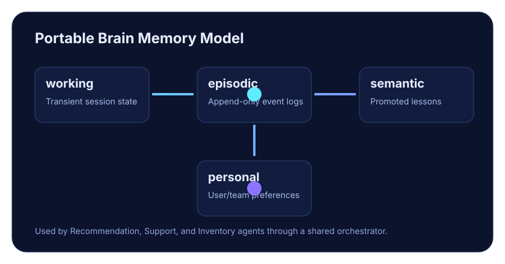

🛒 E-Commerce Core
Products, cart, checkout, order history, and inventory updates built with clean service boundaries.
Enterprise Reference • FastAPI + Agentic AI
Agentic Stack combines production-ready e-commerce workflows with a portable multi-agent memory architecture.

Layered e-commerce backend + orchestrated agent runtime with tool-driven execution.
Products, cart, checkout, order history, and inventory updates built with clean service boundaries.
Recommendation, customer support, and inventory agents coordinated via a central orchestrator.
Portable brain pattern with structured working, episodic, semantic, and personal memory stores.
python3 -m venv .venv
source .venv/bin/activate
pip install -e ".[dev]"
cp .env.example .env
uvicorn app.main:app --reloadEmail: admin@agentic-commerce.local
Password: admin123
Use this account to quickly test authenticated flows.
POST /api/v1/auth/loginGET /api/v1/products/POST /api/v1/cart/itemsPOST /api/v1/orders/checkoutGET /api/v1/agents/recommendPOST /api/v1/agents/supportGET /api/v1/agents/inventory/{product_id}